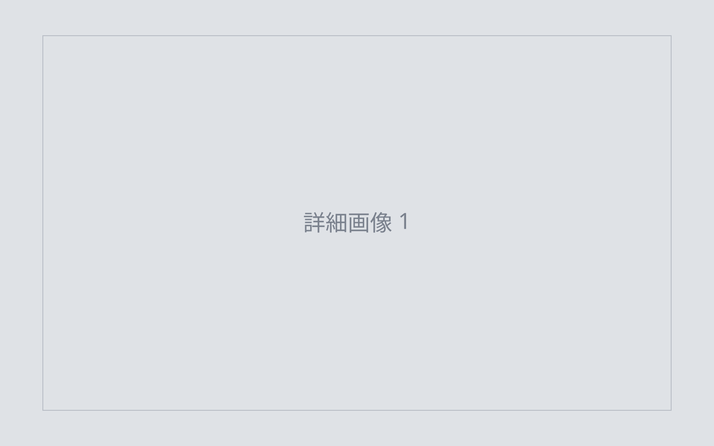
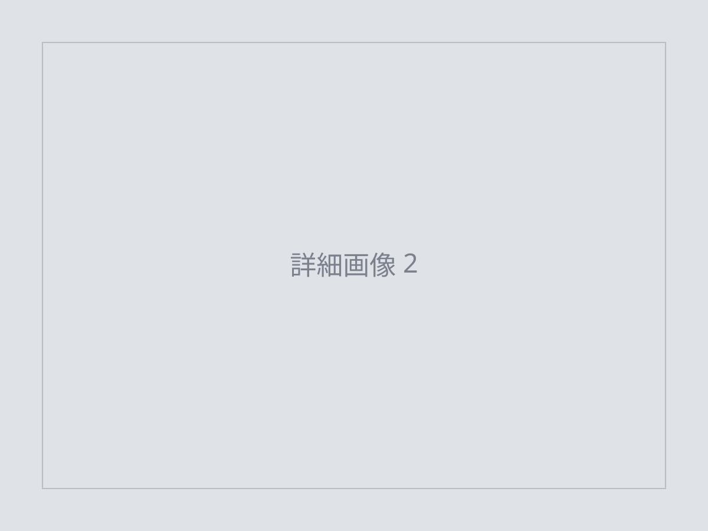
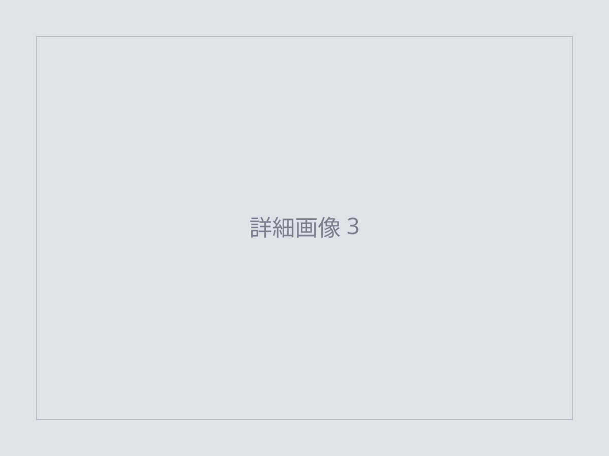

背景
クライアントは、旬の野菜を毎月届ける定期便サービスです。広告で新規のお客さまは順調に増えていましたが、売上の伸びは止まっていました。
最初にいただいた依頼は「ブランドが古く見えるので、20〜30代に届くデザインにしたい」というものでした。
課題の設計
最初の依頼
若い世代に届く、新しいデザインにしたい
わかったこと
新規の半数近くはすでに20〜30代。一方で、42%が3か月以内に解約していた
解くべき課題
届いた箱を開けるたびに、続ける理由が増えていく体験をどうつくるか
なぜそう言い直したか
購入データを見ると、ターゲット世代にはすでに届いていました。売上が伸びない原因は、獲得ではなく継続にありました。
解約したお客さま8名へのインタビューでは、「野菜が余ってしまう」「何を作ればいいかわからない」という声が多く出ました。デザインが古いことを理由に挙げた人はいませんでした。
関係者との合意
マーケティング部と経営陣にこの結果を共有し、プロジェクトの目標を「ブランドの若返り」から「3か月継続率を70%にする」に変えることで合意しました。評価の指標を先に決めたことで、その後のデザインの判断が早くなりました。
進め方
-
解約までの体験を書き出す
注文から3か月目までの体験を、お客さまの行動と気持ちの流れで書き出しました。気持ちがいちばん下がるのは、2回目の箱を開けた瞬間だとわかりました。
決めたこと：パッケージより先に、箱を開けたときの体験から手をつける
-
ブランドの約束を一文にする
「旬をちゃんと食べきれる」を、ブランドの約束として決めました。色や写真、言葉づかいは、すべてこの一文に合うかどうかで判断しています。
捨てたこと：当初の案だった「おしゃれな食卓」路線。食べきれない不安を強めるおそれがあったため
-
同梱リーフレットを試作して確かめる
その月の野菜で作れる献立を3品だけ載せたリーフレットを試作し、200世帯で2か月テストしました。テストした世帯では、解約率が下がりました。
決めたこと：リーフレットを体験の中心に置き、パッケージとWebサイトはそこへ導く役割にする
-
ガイドラインに落とし込む
毎月の制作をクライアントの社内チームが続けられるように、献立ページのテンプレートと写真の撮り方をガイドラインにまとめました。
決めたこと：完成度より、社内で毎月まわせることを優先する
つくったもの



成果
- 3か月継続率
- 71%刷新前は58%
- お客さま1人あたりの年間購入額
- 1.3倍刷新前の1年と比較
- リーフレットの制作
- 社内で毎月リリース後は外注なしで運用
数字はリリース後6か月の平均です（例）。
振り返り
依頼をそのまま受けていれば、見た目は新しくなっても売上は変わらなかったと思います。最初の1か月を数字とインタビューに使ったことが、いちばん大きな判断でした。
一方で、Webサイトの改修はリーフレットの検証を待ったため、公開が予定より1か月遅れました。次は、検証と並行して進められる部分を早めに切り分けたいと考えています。